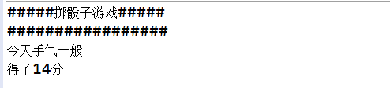
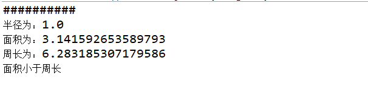
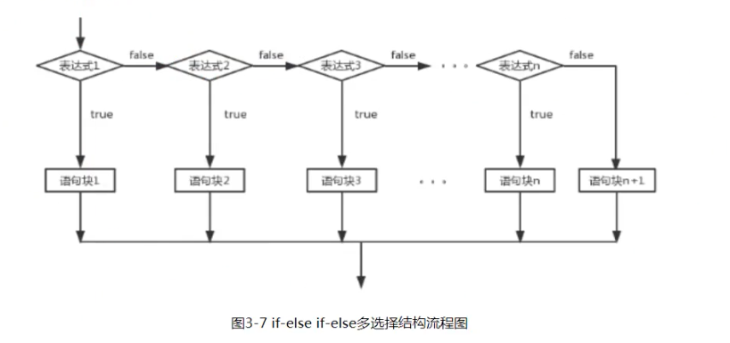
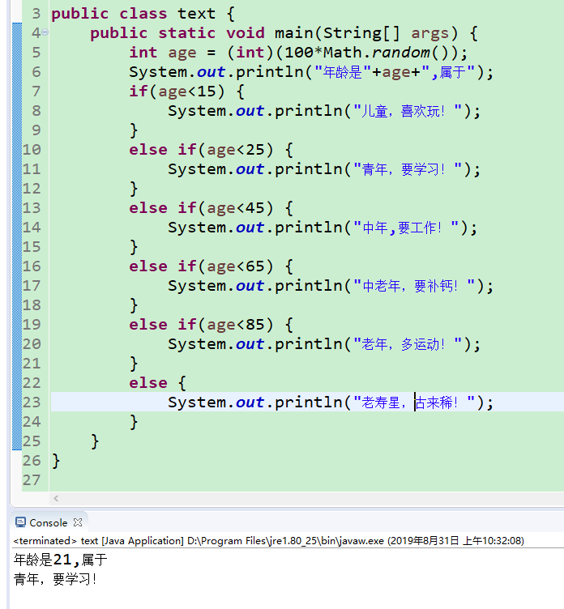

原文出处:本文由博客园博主侠客小飞提供。
原文连接:https://www.cnblogs.com/ma1998/p/11438295.html
原文连接:https://www.cnblogs.com/ma1998/p/11438295.html
1.java掷骰子游戏


public class iftest {
public static void main(String[] args) {
System.out.println("#####掷骰子游戏#####");
System.out.println("#################");
//投掷三个色子看看今天手气怎么样？
int i = (int)(6*Math.random()+1);
int j = (int)(6*Math.random()+1);
int K = (int)(6*Math.random()+1);
int sum = i+j+K;
if(sum>15) {
System.out.println("今天手气很不错");
}
if(sum>10&&sum<=15) {
System.out.println("今天手气一般");
}
if(sum<=10) {
System.out.println("今天手气不怎么样");
}
System.out.println("得了"+sum+"分");
}
}
主要运用了if语句和random产生【0,1）随机数的方法。
2.计算圆周长和面积
代码如下所示
public class testifelse {
public static void main(String[] args) {
System.out.println("##########");
//随机产生一个[0.0,4.0)区间的半径，并根据圆的半径求圆的面积和周长
double r = (int)(4*Math.random());
//math.pow(r,2);求半径r的平方
double area = Math.PI*Math.pow(r, 2);
double circle = 2*r*Math.PI;
System.out.println("半径为："+r);
System.out.println("面积为："+area);
System.out.println("周长为："+circle);
//添加if else条件
if(area >= circle) {
System.out.println("面积大于等于周长");
}
else{
System.out.println("面积小于周长");
}
}
}
math.pow(r,2);可以求半径r的平方。
主要运用了产生[0.0,4.0)随机数以及求圆的面积和周长的方法。
3.ifelse

1 public class text {
2 public static void main(String[] args) {
3 int age = (int)(100*Math.random());
4 System.out.println("年龄是"+age+",属于");
5 if(age<15) {
6 System.out.println("儿童，喜欢玩！");
7 }
8 else if(age<25) {
9 System.out.println("青年，要学习！");
10 }
11 else if(age<45) {
12 System.out.println("中年,要工作！");
13 }
14 else if(age<65) {
15 System.out.println("中老年，要补钙！");
16 }
17 else if(age<85) {
18 System.out.println("老年，多运动！");
19 }
20 else {
21 System.out.println("老寿星，古来稀！");
22 }
23 }
24 }
4.switch语句
switch用于多值判断
1 /*测试switch语句*/
2 public class switch1 {
3 public static void main(String[] args) {
4 int month =(int)(1+12*Math.random());
5 switch(month) {
6 case 1:
7 System.out.println("一月份，新年快乐！");
8 break;
9 case 2:
10 System.out.println("二月份，春天来了！");
11 break;
12 default:
13 System.out.println("我是其它月份，作者太懒了，不想写！");
14 }
15 }
16 }